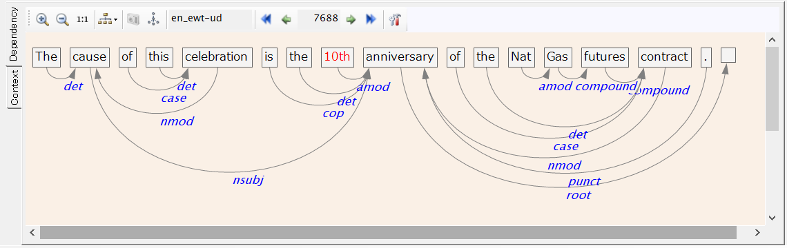
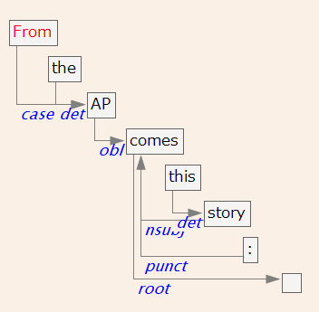
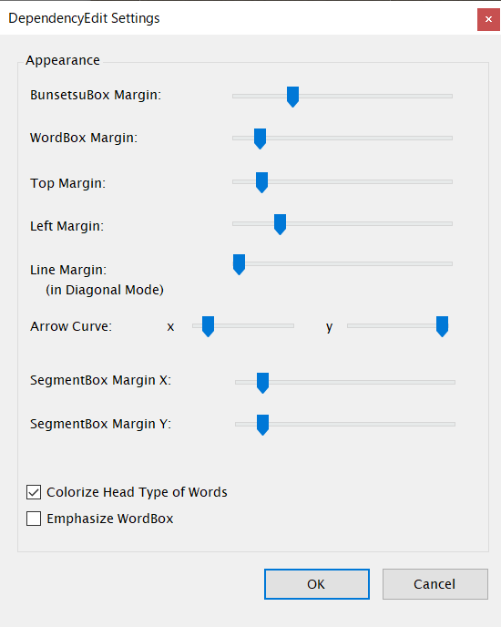

指定した文内のDependencyを見る
ChaKi.NET liteには、指定した文に付与されている依存情報（または文節・係り受け情報）を表示するためのDependency情報表示エリアを持っています。 エリア左端のタブで"Dependency"が選択されていることを確認しでください。
文脈を表示する操作と共通になりますが、KWIC結果ビューに表示されている任意の文（行）をダブルクリックすると、 その文に付与されている依存関係がエリアに表示されます。下図に例を示します。

以下、UD TreebankなどCONLLベースのコーパスにおいては、文節=語と読み替えてください。
文はまず文節に分けられて文節Boxのリストとなっており、各文節はさらに語に分けられて 語Boxのリストになります。各文節Boxからは必ず１つの係り受け矢印が出ており、他の文節Boxに 入っています。赤い文字の語BoxはKWICの中心語を示しています。 なお、文末に存在する空白のBoxはダミーの文節Boxであり、各文に自動的に挿入されて 係り先のない文節の受け口となります。係り受け矢印に付加される"nsubj"などの文字はDependencyの タグです。
上方のツールバーには左から順に次の機能が割り当てられています。
| アイコン | 機能 |
|---|---|
| 表示を拡大する | |
| 表示を縮小する | |
| 表示をデフォルトサイズにする | |
| 表示形式を変更する | |
|
|
スナップショットをクリップボードにコピーする（未実装） |
|
|
係り受け構造をGraphVizのDOT形式でセーブする |
| 編集対象の文の属するコーパス名 | |
|
|
コーパス内のひとつ前の文に移動する |
| KWIC結果リスト内のひとつ前の文に移動する | |
| 編集対象の文ID（クリックすると変更できます） | |
| KWIC結果リスト内のひとつ後の文に移動する | |
| コーパス内のひとつ後の文に移動する | |
|
|
表示設定ダイアログで間隔や線のスタイルを変更する |
表示形式として、Diagonal表示、Horizontal表示、およびMorphemes表示の3種類が用意されています。 上の図はHorizontal表示ですが、Diagonal表示を選択すると下図のような表示に切り替わります。 表示系のコマンドは編集内容には影響しませんので、随時見やすい形式に調整して編集を行います。

表示のカスタマイズ
Dependencyパネル上の、何もヒットしない場所で右クリックを行うと、下図のようなダイアログが表示されます。 このダイアログを通じてさまざまな表示上のマージン値や係り受けの矢印形状などを変更することができます。
